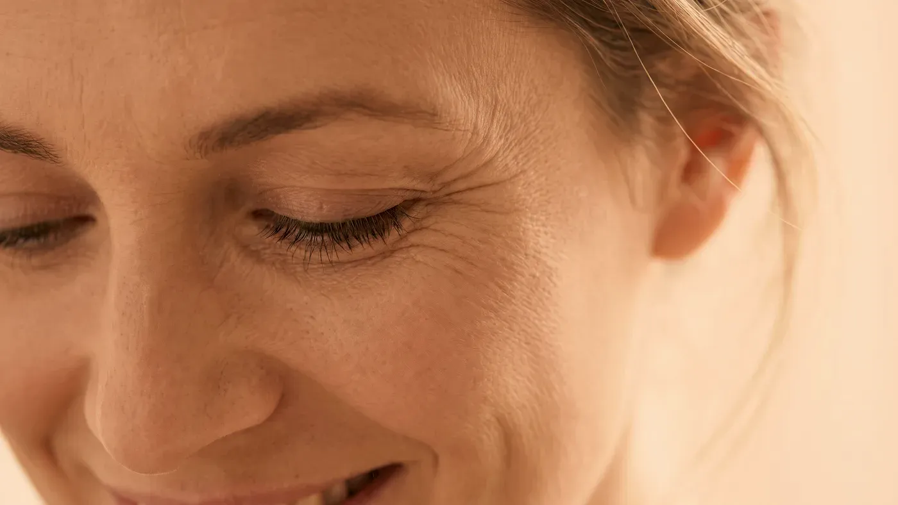

Şikâyet rehberi · Mimik ve kırışıklık
Önce çizginin nereden geldiğine bakıyoruz
Yüzdeki çizgilerin bir kısmı yalnız kaş kaldırdığınızda ya da gülümsediğinizde ortaya çıkar; bir kısmı ise yüzünüz tamamen dinlenirken de yerinde durur. İlki kas hareketinin, ikincisi deride yerleşmiş yapısal değişimin izidir. Hangisinin ağır bastığı anlaşılmadan hangi yöntemin konuşulacağına karar verilemez.

Temsilî görsel · yapay zekâ ile üretildiAyrım
Kırışıklıklar hangi yollarla oluşur?
Her mimik, deriyi aynı hat boyunca katlar. Genç deri bu katlanmanın hemen ardından düzleşir; yıllar geçtikçe esneklik azalır ve kat yeri kalıcı bir çizgiye dönüşür. Bu dönüşümde kasın çalışma gücü, deri içindeki destek liflerinin azalması, güneşin birikimli etkisi ve yüz hacminin yer değiştirmesi birlikte rol oynar.
Hareketle beliren (dinamik) çizgiler
Mimik kaslarının kasılmasıyla ortaya çıkar. Alındaki yatay çizgiler, iki kaş arasındaki dikey çizgi ve göz kenarındaki kaz ayağı bu grubun tipik örnekleridir. Yüzünüzü gevşettiğinizde çizgi neredeyse hiç görünmüyorsa baskın bileşen harekettir; bu durumda konuşulan, ilgili kasın ne kadar güçlü çalıştığıdır.
Dinlenirken de görünen (statik) çizgiler
Yüz hareketsizken de izlenen çizgilerdir. Burada tek etken kas değildir; deri içindeki kolajen ve elastik liflerin azalması, yıllarca aynı yerden katlanma ve alttaki hacmin incelmesi birlikte etkilidir. Korunmasız güneş ve sigara bu dönüşümü hızlandırır. Amaç derinin kendi destek yapısını güçlendirmek, derin çizgilerde ise hacmi desteklemektir; değişim haftalar ile aylar arasında, kademeli olarak izlenir.
Kuruluğa bağlı ince çizgilenme
Mimikle bağlantısı olmayan, yüzeyde ağ gibi yayılan çok ince çizgilerdir. Cildin su tutma kapasitesi düştüğünde belirginleşir, nem dengesi yerine oturduğunda bir kısmı geriler. Bu tablo nem kaybı ve donukluk sayfasında ayrıca anlatılır.
Süreci hızlandıran etkenler
Deri içindeki kolajen yapımı genç erişkinlikten itibaren her yıl bir miktar azalır. Bu biyolojik süreci durdurmak mümkün değildir, ancak hızını etkileyen etkenler vardır. En belirleyici ve en kolay değiştirilebilen etken güneştir. Sigara hem deriye giden kan akımını azaltır hem de dudak çevresinde kendine özgü dikey çizgiler oluşturur.
Düzensiz uyku, sık tekrarlanan kilo alıp verme ve hep aynı yanağın üzerine yatma alışkanlığı da katkı verebilir. Burun kanadından ağız köşesine uzanan belirgin hat ise bir kırışıklık değil, yanak ile dudak arasındaki doğal sınırdır; derinleşmesi daha çok hacim dağılımıyla ilgilidir. Bu konuyu hacim kaybı ve sarkma sayfasında anlatıyoruz.
Önce yüzünüz tamamen gevşekken incelenir; bu anda görünen her çizgi statik bileşeni gösterir. Ardından kaş kaldırmanız, kaş çatmanız ve gülümsemeniz istenerek kasların gücü ve iki taraf arasındaki farklar izlenir. Derinin kalınlığı, nem durumu, hacim dağılımı, kullandığınız ilaçlar ve daha önceki uygulamalar hekim muayenesi sırasında kayda geçer.
Her çizginin ele alınması gerekmez. Gülümsediğinizde göz kenarınızda oluşan çizgiler ifadenizin bir parçasıdır; amaç onları ortadan kaldırmak değil, yorgun ya da gergin bir görüntü veriyorsa yumuşatmaktır. Belirgin deri fazlalığı ya da görmeyi etkileyen göz kapağı düşüklüğü cerrahi olmayan yöntemlerin sınırı dışında kalır; böyle bir durumda bunu açıkça söyleriz (neden bazı işlemleri yapmıyoruz).
Saatler ya da günler içinde gelişen tek taraflı yüz düşüklüğü, göz kapağını kapatamama, ağız kenarından sıvı kaçırma veya konuşmada bozulma estetik değerlendirmenin konusu değildir. Vakit geçirmeden 112 Acil Çağrı Merkezi’ni arayın veya size en yakın hastanenin acil birimine gidin.
Sonrası
Çizginin kaynağı netleşince hangi seçenekler konuşulur?
Genel ilke basittir: hareketten doğan çizgide kasın gücü, dokudan doğan çizgide derinin kendisi ya da alttaki hacim hedef alınır. Aşağıdaki liste bilgi vermek içindir; sizin için hangisinin uygun olduğunu muayene belirler.
Botulinum toksin
HAREKETMuayenede belirlenir→Dolgu uygulamaları
HACİMMuayenede belirlenir→Gençlik aşısı (skinbooster)
DOKUMuayenede belirlenir→Fraksiyonel lazer
YÜZEYMuayenede belirlenir→
Botulinum toksin
Hareketin baskın olduğu çizgilerde ilgili kasların çalışma gücünün azaltılması hedeflenir; etkinin süresi kişiden kişiye değişir.
Sayfasına git →Sık gelen sorular
Merak ettiğiniz soruya dokunun, yanıtı burada açılsın
Bir adım ötesi
Çizgilerinizin kaynağını muayenede birlikte görelim
Yüzünüz önce dinlenirken, sonra hareket hâlindeyken incelenir; hangi çizginin hangi gruba ait olduğu size tek tek gösterilir.
Metni hazırlayan ve tıbbi açıdan gözden geçiren: Uzm. Dr. Rahmi Cebeci (Aile Hekimliği Uzmanı · Medikal Estetik Sertifikalı).
Buradaki anlatım herkese yöneliktir; size özel bir teşhis ya da tedavi planı sunmaz, muayenenin yerini tutmaz. Her uygulamanın etkisi kişiye göre farklı olur.